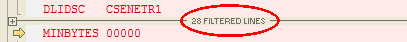

Text View Options
Tools > Options > File Views > Text


|
Text View Options Tools > Options > File Views > Text |
|
|
These options apply to Text Compare and Text Merge sessions. Editing features Auto indent When enabled and a new line is created, it is automatically indented to match the leading whitespace on the previous line. Backspace unindents When enabled and positioned immediately after the leading whitespace on a line, pressing the BACKSPACE key deletes enough whitespace to match the previous indentation level, as defined by preceding lines. Allow positioning beyond end of line When enabled, the edit cursor is not constrained by the end of text on a line. Display options Most of the display settings for Text Compare and Text Merge are found on the Display and Compare Colors pages of the Options dialog. Settings specific to the text editors are here. You can add or subtract pixels from Extra line spacing to change the density of text in the view. To show a vertical line at a specific column position, set Show column line at to the desired value. Set it to zero (0) to hide the line. If you use a proportionally spaced font, the column position will be determined by the width of the space character. Enable Show filtered line counts to display a summary of lines hidden by display filters: 
Other miscellaneous options Initialize "Text to find" to be current word Causes the current selection to be filled in as the search text for the Find Number of context lines Defines the number of matching lines to display before and after a difference section when the Text Compare's Show Context |